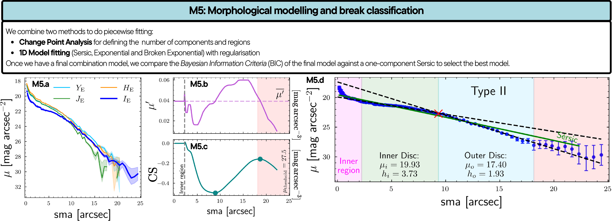
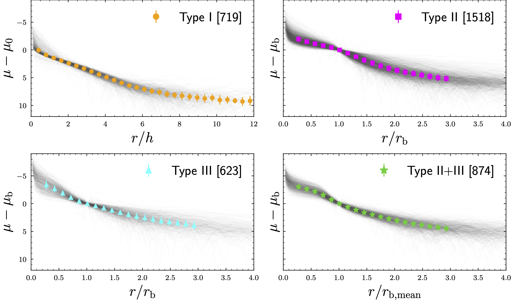

Module 5 – Disc Break Classification
- euclid_pipelines.euclid_module5(profiles, photometry, object_id, outPath, z=0, sb_threshold=None)[source]
Euclid Pipeline 5. Given the surface brightness profiles and the photometry of the source, classify the breaks in the profile and measure the parameters of the galaxy models.
Result file: EUC_SEGMID_{object_id}_breaks.csv
- Parameters:
profiles (Table) – Table with the profiles of the source in different bands
photometry (Table) – Table with the photometry of the source in different bands
object_id (int) – Euclid’s object ID of the source
outPath (str) – Path to save the breaks
z (float) – Redshift of the source to apply threshold
sb_threshold (float) – Surface brightness threshold at z=0 to apply to the profile
- Returns:
breaks – Table with the parameters of the models fitted.
- Return type:
Table
Scientific description
Module 5 classifies each galaxy’s surface brightness profile into one of several disc break types and fits parametric models to each disc component. The method is adapted from the change-point analysis of Watkins et al. [18] and Sánchez-Alarcón et al. [19], extended with automated piecewise fitting and Bayesian model selection.
Profile preparation
The VIS intensity profile from M3 is converted to surface brightness magnitudes:
where scale is the pixel scale in arcsec pixel⁻¹ and the correction
\(c = c_1 + c_2\) includes:
Redshift surface brightness dimming ():
Inclination correction (following Sánchez-Alarcón et al. [16]):
where \(\varepsilon\) is the median ellipticity at \(\mu > 25.5\) mag arcsec⁻².
A surface brightness threshold of \(\mu_\mathrm{thresh} = 27.5\)
mag arcsec⁻² in the galaxy rest frame (configurable via sb_threshold) is
applied to ensure a homogeneous depth across the redshift range
\(0 < z < 1\). This level corresponds approximately to the Euclid
sensitivity limit of ~29.5 mag arcsec⁻² observed at \(z\approx 1\).
The profile is additionally smoothed with a Savitzky–Golay filter (width adapted to 4 % of \(R_\mathrm{max}\) with a minimum of 5 points, polynomial order 1), preserving the inner region (\(< 1.5\) arcsec) in its unsmoothed form.
Change-point analysis
The derivative of the smoothed profile, \(\mu^\prime(r)\), is computed via local linear regression over the five adjacent profile points. The weighted mean derivative \(\bar{\mu}^\prime\) is defined using arc-length weights to account for the logarithmic radial spacing:
The cumulative sum (CS) of \((\mu^\prime - \bar{\mu}^\prime)\) is:
Peaks and minima of CS are detected with scipy.signal.find_peaks
(minimum prominence 0.15 mag arcsec⁻³) to locate candidate break positions.
\(N_\mathrm{peaks}\) breaks divide the profile into
\(N_\mathrm{peaks} + 1\) regions.
To isolate the outer disc, a second CS is computed after masking the inner region (defined by the innermost peak), using only the outermost portion of \(\mu^\prime\) to determine the weighted mean derivative.
Piecewise model fitting
Inner region (Sérsic model): The inner region — from the centre to 110 % of the first CS peak — is always fitted with a Sérsic profile in mag arcsec⁻² units:
where \(b_n\) is the Sérsic shape constant, and the free parameters are \((\mu_\mathrm{e},\, R_\mathrm{e},\, n)\).
Outer regions (broken or single exponential): For each outer region, two models are considered:
Broken exponential (Sánchez-Menguiano et al. [20]):
with the softening weight:
and continuity condition at \(r_b\):
The sharpness parameter is fixed at \(\beta = 10^{-8}\) arcsec. The loss function used to fit the broken exponential adds two regularisation terms to the \(\chi^2\) to prevent degenerate solutions (identical inner and outer scale lengths) and breaks too close to the region boundaries:
with \(\alpha=10^{-2}\), \(\delta=10^{-4}\), and \(\gamma = N\) (number of data points in the region).
Single exponential: the first term of the broken-exponential function with \(W_b = 1\) everywhere.
Model selection per region: The broken exponential is adopted only if both conditions are met:
Global model and final classification
The per-region components are assembled into a combined model (at most one Sérsic + up to four disc components, with continuity enforced between consecutive discs). The combined model is re-fitted to the full profile with all free parameters initialised from the per-region fits.
The combined model is accepted over a single global Sérsic fit only if its BIC is lower. Profiles requiring more than four disc components are flagged as Null.
The resulting scale lengths \((h_1, h_2, h_3)\) — ordered from the galaxy centre outward — determine the break type:
Type |
# discs |
Criterion |
|---|---|---|
0 (Sérsic only) |
0 |
Single Sérsic profile; no exponential disc component |
I |
1 |
Single disc; no break |
II |
2 |
\(h_1 > h_2\) — down-bending (truncated) |
III |
2 |
\(h_1 < h_2\) — up-bending (anti-truncated) |
II+II |
3 |
\(h_1 > h_2\) and \(h_2 > h_3\) |
III+III |
3 |
\(h_1 < h_2\) and \(h_2 < h_3\) |
II+III |
3 |
\(h_1 > h_2\) and \(h_2 < h_3\) |
III+II |
3 |
\(h_1 < h_2\) and \(h_2 > h_3\) |
Null |
>3 |
More than four components required |
Estimated classification accuracy is ~70 % based on visual inspection of 490 randomly selected galaxies from the reliable sample (\(\chi^2_\nu < 0.75\), \(\chi^2_\mathrm{max} < 7.4\)).
{kind=link}

M5 panels for EUCL J040743.76−465230.1. Top left: :math:`mu_{I_mathrm{E}}` profile and its derivative :math:`mu^prime`. Bottom left: cumulative sum CS with the single detected peak (after masking the inner region) used to define two disc regions. Bottom right: best-fit broken exponential (Type II) overlaid on the observed profile.
{kind=link}

Stacked normalised SB profiles for Type I, II, III, and II+III galaxies. Profiles are scaled to the break radius and the surface brightness at the break. For Type I, the scale length and central SB are used.
Output file
Column group |
Description |
|---|---|
|
Global Sérsic fit parameters (\(\mu_e\), \(R_e\), \(n\)) and χ² |
|
Inner-region Sérsic fit parameters and radial limits |
|
Per-region exponential/broken-exponential fit results ( |
|
Combined model parameters: \(\mu_e\), \(R_e\), \(n\), \(\mu_0\), \(h_1 \ldots h_4\), \(r_\mathrm{break,1} \ldots r_\mathrm{break,3}\), number of disc components, χ², BIC, BIC ratio |
|
Integer break type (−1 = not classified; corresponds to types in the table above) |
|
Applied SB threshold and corresponding profile truncation radius/SB |